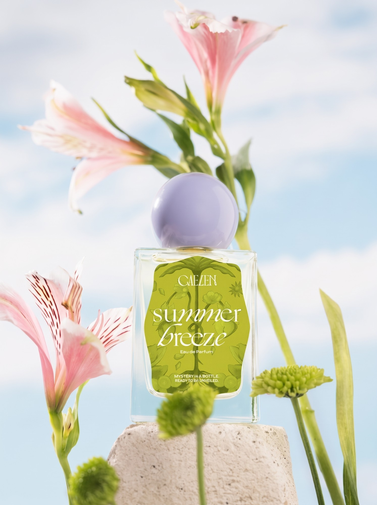

пример: сцена вокруг продукта
пример: смена фона

сцена и фон
Nano Banana
Когда нужно достроить сцену или сменить фон вокруг продукта, идём в Nano Banana: он принимает сразу несколько референсов и достраивает окружение по ним.
Слабое место — кожа и материалы: без подсказки получается гладкий результат, который выдаёт нейросеть.
Заранее решите, какой материал должен читаться в кадре, и проверяйте его крупным планом.